PHI-Twin: Physics-AI
B787 Landing Gear Prognostics
A three-layer, edge-deployable predictive maintenance framework for the Boeing 787-8 main landing gear. Layer 1 deploys an ODE synthesis engine generating 18,000 physics-valid fault profiles at 300× the speed of Simscape. Layer 2 uses a zero-leakage CNN-BiLSTM with Temporal Self-Attention. Layer 3 integrates an offline Ollama 3.2 LLM translating neural outputs into ATA 32-compliant directives.
80.6%
Accuracy±244h
RUL MAE18k
ODE Samples<1.5s
Edge Latency

PHI‑CHAIN: Blockchain +
Physics‑Informed Security
A multi‑protocol security framework integrating a permissioned blockchain (Hyperledger Fabric) with a four‑layer Physics‑Informed Digital Twin (PIDT) to detect cyber‑attacks and physically impossible data injections. Covers ADS‑B, CPDLC, and ACARS telemetry at 10Hz. Every packet is signed with Ed25519, Merkle‑batched, and anchored on-chain.
10 Hz
Data Rate36k
Packets/hr1.8 s
Latency100%
Detect Rate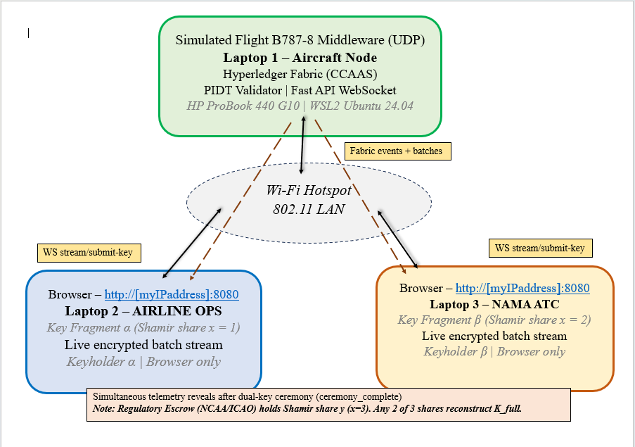
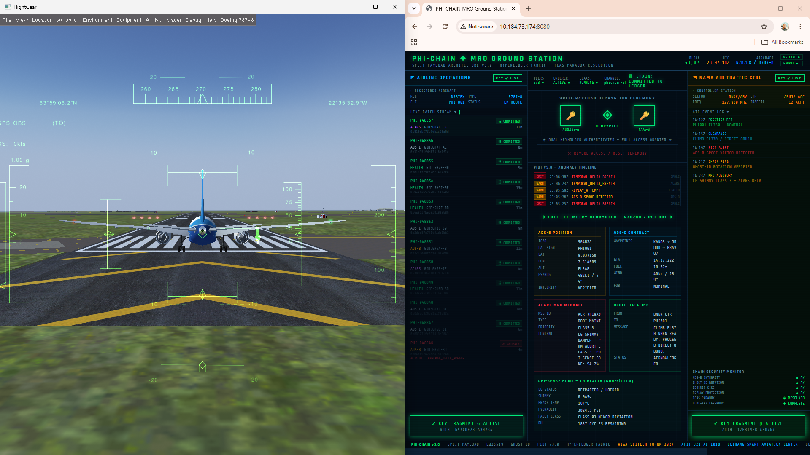
B787 Ignition Digital Twin
Deep Feature Spoofing
A closed‑loop PHM Digital Twin for the Boeing 787‑8 ignition system. Overcomes run‑to‑failure data scarcity with a physics‑informed MATLAB ODE solver generating 27,000 samples across 11 fault modes. A LightGBM regressor maps micro‑electrical degradation to RUL, deployed via a decoupled FastAPI microservice with a God-Mode GUI.
0.87
R² Score39
MAE (Cyc)27k
Samples11
Fault Modes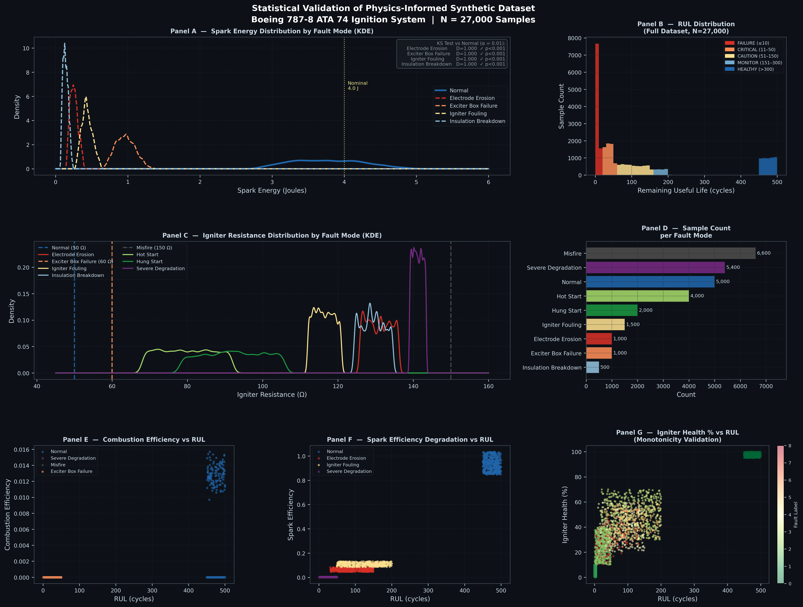
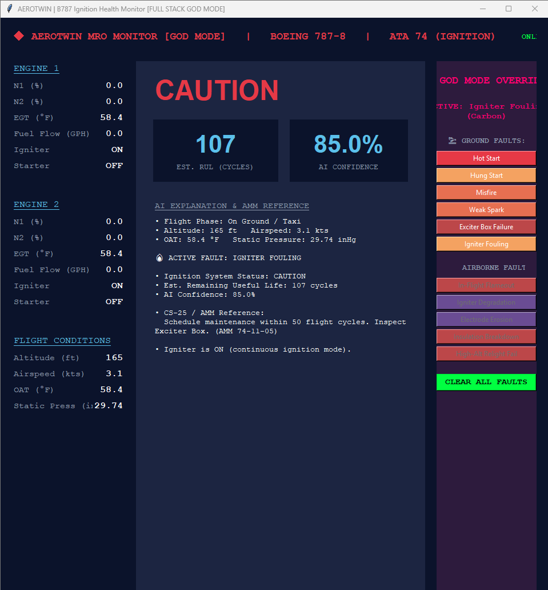
PHI-Twin: Physics-AI
Dornier 228 Landing Gear
A certification-compliant Cyber-Physical System fusing MATLAB Simscape Multibody physics with a dual-input LSTM network via PostgreSQL. The confidence-weighted fusion explicitly satisfies CS-23.473 hard-landing regulations, triggering mandatory ATA 32-00 inspections at high sink rates. Trained on 9,500 Dornier 228 landing cycles.
94.2%
Accuracy350×
Cost Drop47ms
Latency9,500
Cycles
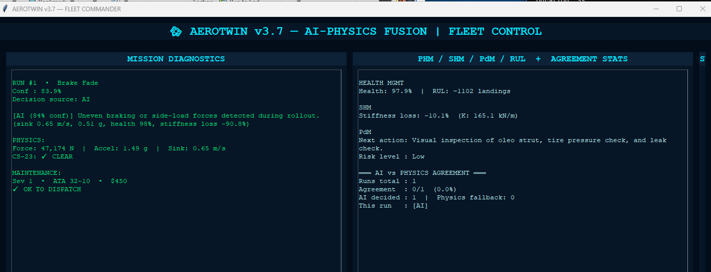
STRATOS-14E
Ultra-Long-Range VIP Transport
A first-principles 14-seat VIP transport integrating aerodynamics, structures, propulsion, and systems architecture. Embeds a native PHI-SENSE HUMS grouping 1,027 concurrent structural strain sensors. A CNN-BiLSTM-Attention deep classifier delivers 47ms state inference at 98.5% accuracy. A permissioned PHI-CHAIN ledger secures tamper-proof lifecycle log tracking.
12.5k
km RangeM0.85
Cruise36.2t
MTOWFL510
Ceiling
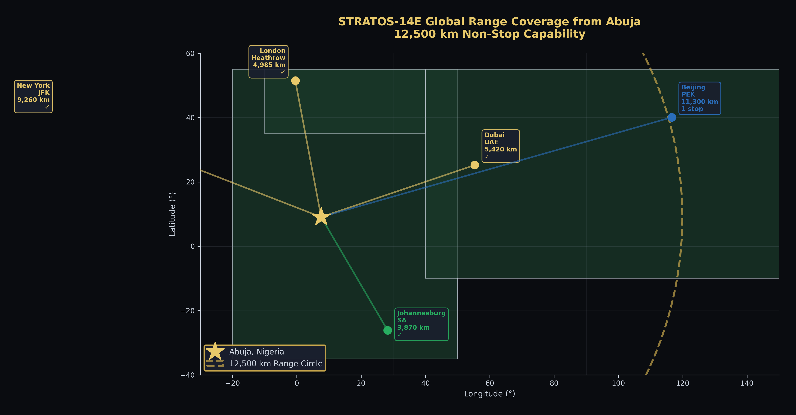
PHI-DRONE
Digital Twin Reconnaissance Hub
A zero-cost open-source UAV simulation pipeline integrating ArduPilot SITL, FlightGear, and YOLOv8 for real-time object detection and telemetry fusion. Engineered a cross-platform (Windows/WSL2) architecture with screen-capture calibration and thread-safe MAVLink GPS logging. Validates the companion-computer pattern entirely in software.
15fps
InferenceZero
HW CostWSL2
BridgeQ1
Journal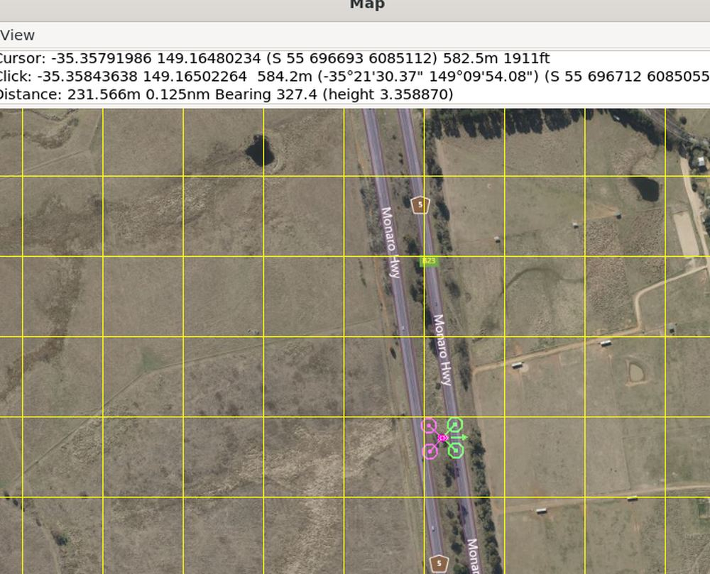
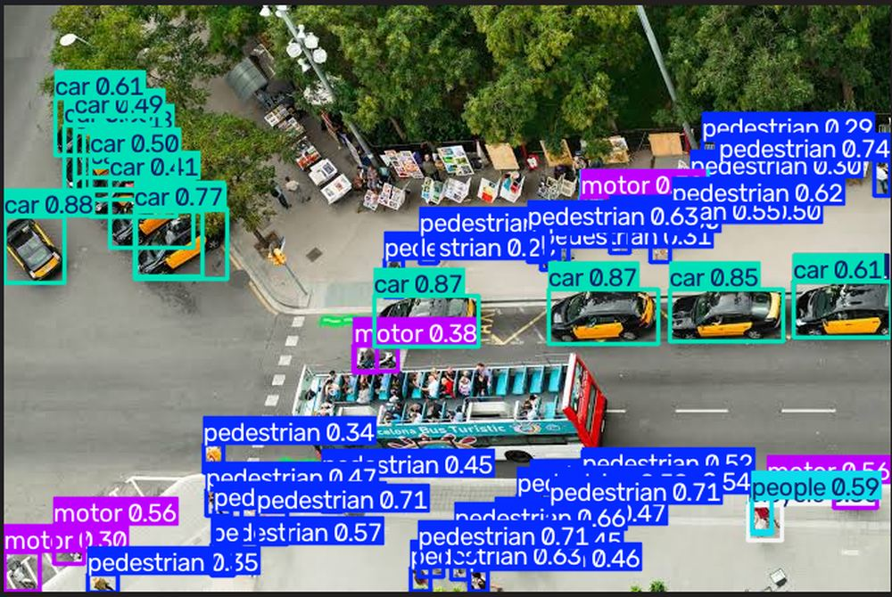
CFD Spatiotemporal CVAE
Rotary Detonation Augmentation
A 4.3M-parameter generative Conditional Variational Autoencoder that augments scarce Rotary Detonation Engine CFD data. Built from 12 OpenFOAM v2406 reactive-flow simulations, the CVAE generates 72 physically consistent spatiotemporal fields. Documents a critical finding: standard literature velocity correlations overestimate true Chapman-Jouguet bounds by up to 4× at off-stoichiometric limits.
4.3M
Params72
Fields1.2M
Surrogate4×
CJ Error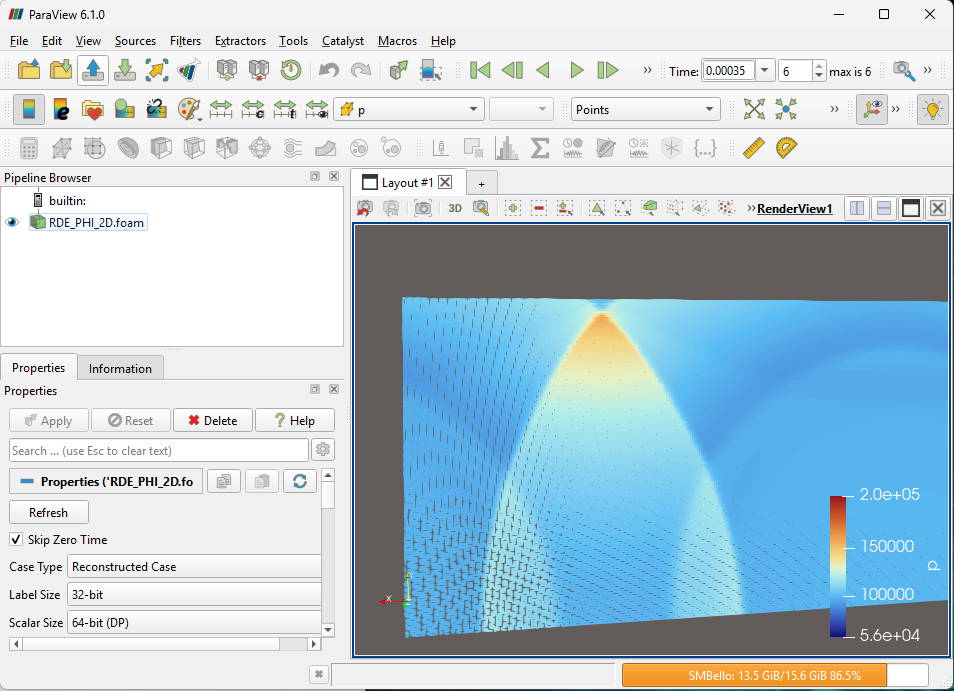
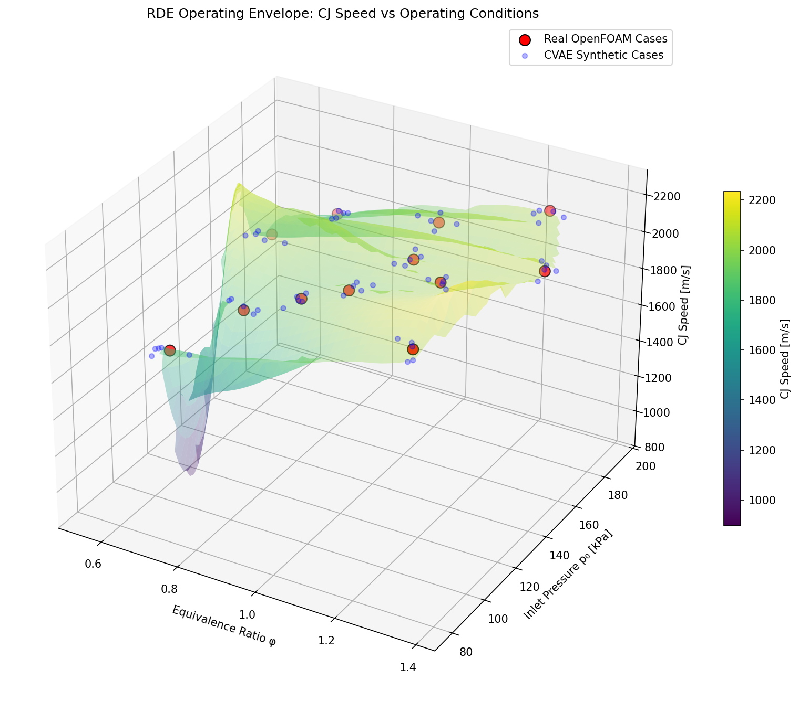
Gas Turbine Blade PHM
AGTF30 Predictive Maintenance
A laboratory-scale predictive maintenance system for High-Pressure and Low-Pressure turbine blade degradation. Uses the AGTF30 advanced gas turbine engine model in MATLAB with a 13-sensor continuous telemetry bus. A deep CNN-BiLSTM-Attention architecture classifies micro-fractures and erosion, connecting to a FlightGear UDP bridge for hardware-in-the-loop validation.
13
Sensors99%
ClassificationHP/LP
StagesHIL
Validation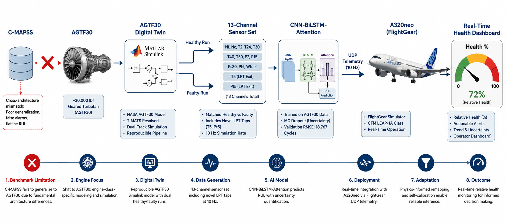
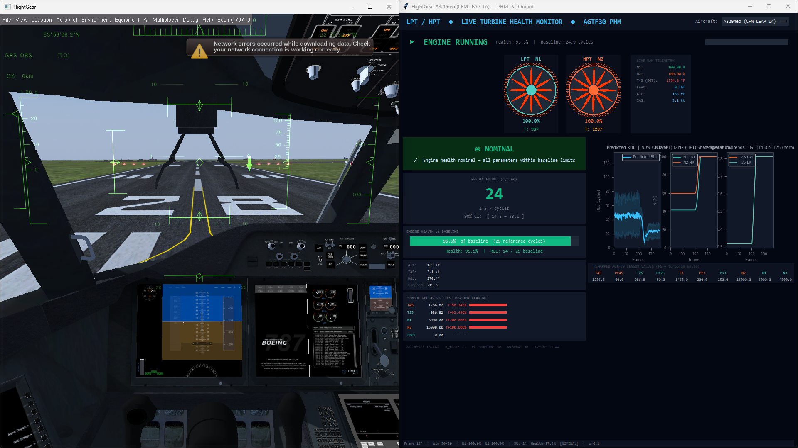
Active & Future Initiatives
AI for Fluids — Airfoil Digital Twin
A neural network surrogate — trained on airfoil sweep data and served live from this page — predicts lift and drag coefficients in real time from geometry, angle of attack, and Reynolds number. Adjust the controls inside, then export the exact sweep you generate as a CSV.
Bearing Digital Twin
Vibration-signature-driven DT for rotating equipment. Combines FFT/envelope analysis with CNN-LSTM to predict spalling 50 cycles early.
Structural Digital Twin
Full-aircraft SHM fusing FEA with Physics-Informed Neural Networks to track crack propagation and buckling risk compliant with EASA AMC 25.571.
Ontology-Driven CAMP
Semantic reasoning brain encoding ATA iSpec 2200 as an OWL/RDF graph. Uses SPARQL to autonomously cross-reference ADs and MEL items.
DevOps & Telemetry Stack
The backbone pipeline. FlightGear UDP streams through Telegraf to InfluxDB 3 and Postgres, visualized in Grafana, served via FastAPI.
Software & AI Systems
Lifestone Engine v2.0
Offline-first speech-to-text processing node via native whisper-rs. Links an Aho-Corasick parser matching 311k text elements with downstream ONNX classifiers.
COLIG Full-Stack Node
Web-Scale Distributed Platform. Integrates high-throughput PocketBase transactions, chronological data models, and LiveKit Cloud infrastructure trees.
Penelope AI Agent v1.2
Sovereign Offline Execution Matrix. Drives multi-provider runtime fallback trees via deterministic ReAct execution loops with physical signature tracking.
Technical Archives & Profiles
Kaggle Profile
Repository of synthetic landing gear datasets, digital twin degradation profiles, and machine learning notebooks used in published research.
Hugging Face
Deployed generative models, CVAE spatiotemporal fields, and live interactive spaces for aerospace fluid and structural AI architectures.
Professional network, architectural design publications, aerospace portfolio updates, and progress on peer-reviewed journal submissions.
GitHub Matrix
Complete codebase repository of aerospace research, digital twin simulation pipelines, and autonomous agent architectures.